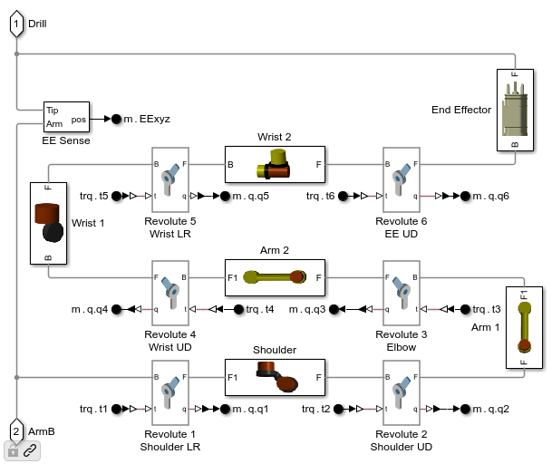
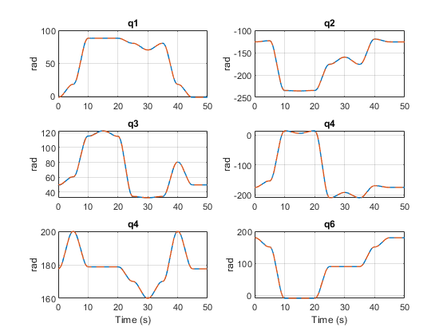

Planning Trajectory for Rover Arm: Inverse Kinematics
This example shows how to obtain the joint angles that will enable the end effector of the rover manipulator to pass through specific x-y-z coordinates with a specific orientation. The inverse kinematics object used for the analysis is obtained from a test harness model, mars_rover_arm, which can be used to test the resulting trajectory.
Return to main example mars_rover_terrain
Copyright 2021-2024 The MathWorks, Inc
Contents
Open the Test Harness Model
Open mars_rover_arm.slx.
This subsystem shows the parts and the joints that connect them. These joints will be referenced in the inverse kinematics object.
Define Waypoints for the Robot Arm
The tip of the drill at the of the robot arm must pass through predefined waypoints in order to collect the sample and place it in the storage container on the rover. The waypoints are defined by the position and orientation of the rigid body frame at the tip of the drill. Six numerical values are used to define the waypoint:
- x, y, and z position relative to the rigid body frame at the arm base
- alpha, beta, and gamma angles that define an intrinsic X-Y-Z rotation relative to the rigid body frame at the arm base
A MATLAB table is used to define the waypoints so that it is clear what the numerical values represent. To see the code that defines the MATLAB table, open the script mars_rover_arm_task_space.m
X Y Z alpha beta gamma
_______ _______ _______ _____ ____ _____
Home 0.1 0.38 0.4951 0 0 0
Undock 0.1 0.38 0.65 10 0 0
Sample -0.4284 -1.1828 -1.0289 175 0 91
Approach -0.4284 -1.1828 -0.9289 175 0 91
Prepare -0.4284 0 0.1259 270 0 90
Storage -0.4284 0.15 0.1259 270 0 90
Return 0.1 0.38 0.85 10 0 0
Generate Inverse Kinematics Object
The inverse kinematic analysis is performed using kinematicsSolver object. The kinematicsSolver object is created using a Simscape Multibody model, in this case mars_rover_arm. You add the known and unknown kinematic variables in the object and use the solve object function to obtain the values of the unknown kinematic variables.
Open mars_rover_arm_ik_object_create to see the code that defines the kinematicsSolver object ks_mars_rover.
In the case of our robot arm, we know the waypoints the drill tip must reach, and need to determine the joint angles. We create the kinematicsSolver object by defining frameVariables for the waypoint locations.
ans =
6×1 string array
"Home.Translation.x"
"Home.Translation.y"
"Home.Translation.z"
"Home.Rotation.x"
"Home.Rotation.y"
"Home.Rotation.z"
The joint angles are added as output variables, and will be the result of the kinematics analysis.
ans =
6×1 string array
"mars_rover_arm/Arm/Revolute 1 Shoulder LR"
"mars_rover_arm/Arm/Revolute 2 Shoulder UD"
"mars_rover_arm/Arm/Revolute 3 Elbow"
"mars_rover_arm/Arm/Revolute 4 Wrist UD"
"mars_rover_arm/Arm/Revolute 5 Wrist LR"
"mars_rover_arm/Arm/Revolute 6 EE UD"
To guide the solver to a desirable solution (especially important if there are multiple solutions), we add initial guess values where we can specify the starting point for finding the solution. The initial guess is stored in MATLAB table eeConfig.Joint_IG
q1 q2 q3 q4 q5 q6
______ _______ ______ _______ ______ ___
Home 0 -145 40 -180 180 180
Undock 0 -145 40 -180 180 180
Sample 90 -200 90 40 170 -10
Approach 90 -200 90 40 170 -10
Prepare 66.556 -185.92 38.594 -44.517 156.56 90
Storage 66.556 -185.92 38.594 -44.517 156.56 90
Return 0 -145 40 -180 180 180
Perform IK Analysis to Obtain Joint Angles
An inverse kinematics analysis is performed using the solve object function to obtain the joint angles that enable the drill tip to pass through the waypoints at the desired orientation. See mars_rover_arm_test_joint_space.m to look at the code that performs this analysis.
The screenshots below show the arm in the position defined by the solution that comes from the IK analysis at each waypoint. It is displayed using the command viewSolution.
Arm at "Home" Waypoint
Arm at "Undock" Waypoint
Arm at "Sample" Waypoint
Arm at "Approach" Waypoint
Arm at "Prepare" Waypoint
Arm at "Storage" Waypoint
Arm at "Return" Waypoint
Test Model with Joint Angles Obtained from Inverse Kinematic Analysis
We can test the result of our inverse kinematic analysis by using the joint angles as the command to our control system. A PID controller attempts to track those joint angles and maneuver the arm to each waypoint.
Plot of the drill tip trajectory
Plot of joint angles versus time
